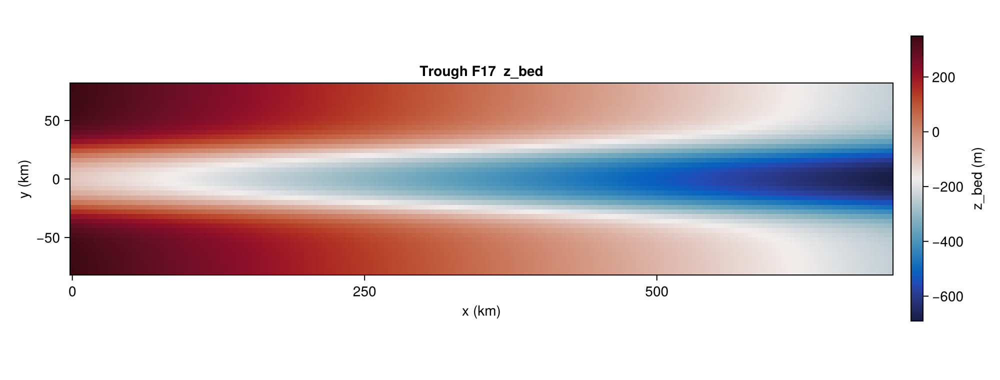

Trough — Feldmann & Levermann 2017
TroughBenchmark implements the trough geometry from Feldmann & Levermann (2017): an idealised marine ice-stream domain with a central reverse-slope channel bordered by raised side walls. The geometry triggers grounding-line migration and streaming instabilities without the complications of a realistic margin.
There is no closed-form solution; the benchmark is host-driven and typically evaluated by running the model to steady state (or to cyclic surging) and comparing against the published reference.
Constructor
TroughBenchmark(variant::Symbol;
dx_km::Real = 4.0,
lx_km::Real = 700.0,
ly_km::Real = 160.0,
fc_km::Real = 16.0,
dc_m::Real = 500.0,
wc_km::Real = 24.0,
x_cf_km::Real = 640.0,
Tsrf_const::Real = -20.0,
smb_const::Real = 0.3,
Qgeo_const::Real = 70.0,
rho_ice::Real = 910.0,
g::Real = 9.81)The grid spans [0, lx] × [−ly/2, +ly/2] (km) at cell centres.
Sub-tests
:F17 — Feldmann & Levermann (2017) bed
The only variant currently implemented. The bed elevation is a closed form
z_bed(x, y) = max(zb_x(x) + zb_y(y), zb_deep)
zb_x(x) = −150 − 0.84 · |x| [m]
zb_y(y) = dc / (1 + exp(−2(y − wc) / fc))
+ dc / (1 + exp( 2(y + wc) / fc)) [m]with zb_deep = −720 m. The cross-section is a parabolic reverse slope in x with a central trough bordered by raised embayments in y.
state(b, t) is not implemented in the core package — hosts populate the geometry via the helper IceSheetBenchmarks._trough_f17_zbed and fill the climate fields (smb_const, Tsrf_const, Qgeo_const) uniformly from the struct.
b = TroughBenchmark(:F17; dx_km = 4.0)
# Build z_bed directly from the closed form (km units):
z_bed = [IceSheetBenchmarks._trough_f17_zbed(b.xc[i]/1e3, b.yc[j]/1e3,
b.fc_km, b.dc_m, b.wc_km)
for i in eachindex(b.xc), j in eachindex(b.yc)]
Helpers
IceSheetBenchmarks.TroughBenchmark — Type
TroughBenchmark(variant::Symbol; dx_km=4.0,
lx_km=700.0, ly_km=160.0, fc_km=16.0,
dc_m=500.0, wc_km=24.0, x_cf_km=640.0,
Tsrf_const=-20.0, smb_const=0.3, Qgeo_const=70.0,
rho_ice=910.0, g=9.81)Feldmann-Levermann (2017) "TROUGH-F17" trough benchmark spec.
variant:
:F17— the standard Feldmann-Levermann (2017, TC) setup. The only variant supported at present.
dx_km is the grid resolution in km. Default 4.0 matches the namelist value. The grid has Nx = lx/dx + 1 points spanning [0, lx] in x and Ny = ly/dx + 1 points spanning [-ly/2, +ly/2] in y, matching the Fortran yelmo_init_grid call at yelmo_trough.f90:100-102.
The trough geometry parameters (fc, dc, wc, x_cf) and forcing (Tsrf, smb, Q_geo) default to the values in yelmo_TROUGH-F17.nml.
This benchmark has no closed-form transient solution; the AbstractBenchmark state(b, t) and write_fixture!(b, …) methods are expected to be implemented by the host (e.g. Yelmo.jl reads a reference fixture produced by its Fortran backend).
References
- Feldmann, J. & Levermann, A. (2017). From cyclic ice streaming to Heinrich-like events: the grow-and-surge instability in the Parallel Ice Sheet Model. The Cryosphere, 11, 1913–1932.